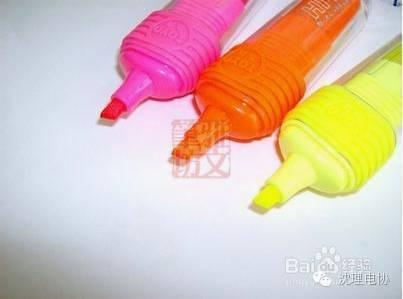
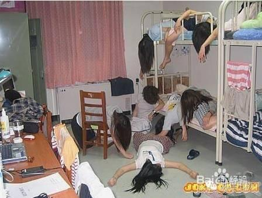
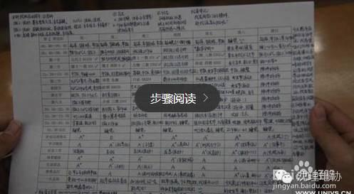

【电协支招】期末必备攻略

“一个只有高中文化程度的小伙子，仅凭自学就在短时间内掌握了十几门大学课程。”这不是励志故事，是期末考试前的我的真实写照。 ---By Wuli小编
step
1
step
2
告诉自己，如果你这几天乖乖复习，不管考的怎样都奖励自己1次旅行或电子设备或其他物品！！！…总之你肯定清楚自己想要什么，要想的发狂的那种。并且给自己明确规定，不好好复习是绝对不给的！
step
3
划重点
历年试题 去超市二楼打印试卷。请师兄师姐吃饭拿到历年试题 请师兄师姐吃饭求勾重点 自己大学老师参与编写的习题册，或老师（参与出题的老师）推荐的习题册 请学霸勾重点（老师上课一定提到过）。

step
4
坚持运动！！对的你没有看错，即使在期末。而且我觉得很有必要放第一条。做过对照实验（虽然实验对象只有我一个样本量略小），自己有一段时间很浮躁，总是无端端各种担心而且就不开始做。突然意识到好久没锻炼了，就去慢跑了几圈。立竿见影啊！第二天开始就每天心情好好成就感满满地在课室里自习到晚上十一点回去睡觉，第二天早早起床继续自习。直到今天
step
5
请远离宿舍。对的！根据亲身经验+各种观察，宿舍里修炼成的学霸是没有的！所以首先请让自己抽离出让自己能接受诱惑以及干扰的环境。

step
6
请远离手机。
最好是关机！或者直接不带！对的！等电话可否发条短信过去说我到12点都在自习请不要打电话，我待会会联系你！。
step
7
计划表。
在开始复习几天之后知道自己的大概速度是怎样了，可以开始列一个计划表，具体到每一章节在哪天复习。建一个 list，搞定就划掉。相信我，会很有成就感。而且心里有底，不会怕复习不完


编/高天